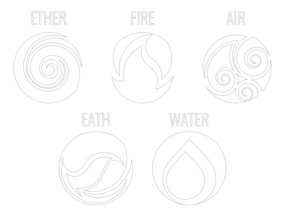

PRIMEIRAS IMPRESSÕES. . .
Cristais são poderosos aliados de magos, bruxos e praticantes que desejam potencializar a energia/força de seus feitiços, encantamentos, ou até mesmo gerar proteção aos que utilizam-se deles. Historicamente, são considerados elementos poderosos pois, mesmo com a ação do tempo se mantem firmes e constante. Dessa forma, percebe-se que eles são bastante úteis e quando usufruídos da forma correta podem causar efeitos estrondosos. Para aprender a manejá-los da forma correta, continue lendo!
ENERGIA DOS CRISTAIS
É importante saber que os cristais funcionam conforme a energia dos elementos naturais que eles transmitem. Existem 5 tipos de energias principais, são elas: fogo, ar, terra e água as demais derivam dessas primárias. Cada elemento ajuda num âmbito da vida cotidiana:
- Terra (Material);
- Ar (Pscicológico);
- Água (Sentimental);
- Fogo (Espiritual).
A energia manipulada fará os efeitos nas áreas correspondentes ao elemento(s) que está sendo utilizado(s).
USOS COMUNS
Os usos mais comuns dos cristais são para proteção, bem estar (cura), harmonia, paixão/atração, prosperidade e espiritualidade. Iremos apresentar alguns dos cristais mais usados para essas fins e o respectivo elemento que ele manifesta. Eles podem ser ultilizados como colares, pingentes, pedras avulsas, decoração